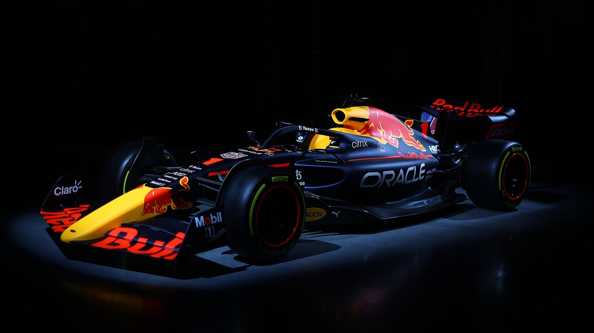

Heyecan ve Adrenalin: Dünyanın en hızlı pilotlarının mücadelesine tanıklık etme fırsatı sunar.
Teknoloji ve Mühendislik Harikası: Her araç, mühendisliğin sınırlarını zorlayan son teknoloji ürünüdür.
Küresel Etkinlik: Formula 1, 5 kıtada düzenlenen yarışlarıyla dünyanın her yerinden izleyicilere ulaşır.
Rekabet ve Strateji: Sadece hız değil, takım çalışması ve strateji de galibiyetin anahtarıdır.
Formula 1, 1950 yılından bu yana dünyanın en prestijli motor sporları organizasyonudur.
Her sezon milyonlarca kişi pistlerde ve ekran başında bu benzersiz mücadeleyi izler.
Hedefimiz, izleyicilere hızın, teknolojinin ve rekabetin birleştiği unutulmaz anlar sunmaktır.
Sunulan Hizmetler
Yarış Etkinlikleri: Her sezon farklı ülkelerde düzenlenen Grand Prix yarışlarıyla izleyicilere unutulmaz deneyimler sunmak.
Teknik Gelişim: Araçların aerodinamik yapısını ve performansını geliştirmek için sürekli yenilikler yapmak.
Pilot Desteği: Pilotların fiziksel ve mental dayanıklılığını artırmak amacıyla profesyonel eğitimler vermek.
Taraftar Etkinlikleri: Fanzone alanlarında taraftarlara yarış öncesi ve sonrası eğlenceli aktiviteler sunmak.
Takım İşbirlikleri: Mühendis, mekaniker ve strateji ekipleriyle koordineli şekilde başarıya ulaşmak.
Formula 1, sadece bir yarış organizasyonu değil; aynı zamanda teknoloji, dayanıklılık ve takım ruhunun birleşimidir.
Her sezon milyonlarca izleyiciye heyecan ve adrenalin dolu anlar yaşatır.

Formula 1 Tarihi
Formula 1, 1950 yılında başlayan ve günümüze kadar dünyanın en prestijli motor sporları organizasyonu olarak devam eden bir yarış serisidir. Her sezon farklı ülkelerde düzenlenen Grand Prix yarışlarıyla hız, teknoloji ve stratejiyi bir araya getirir.